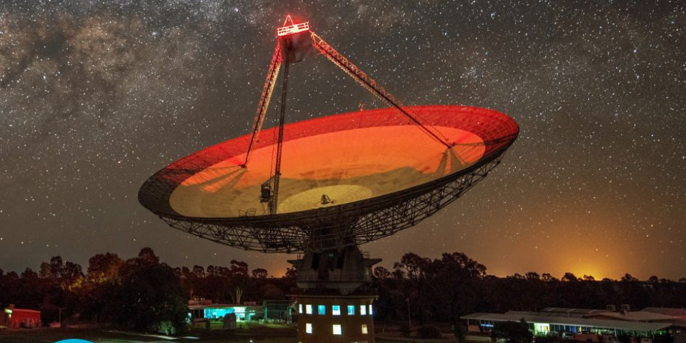
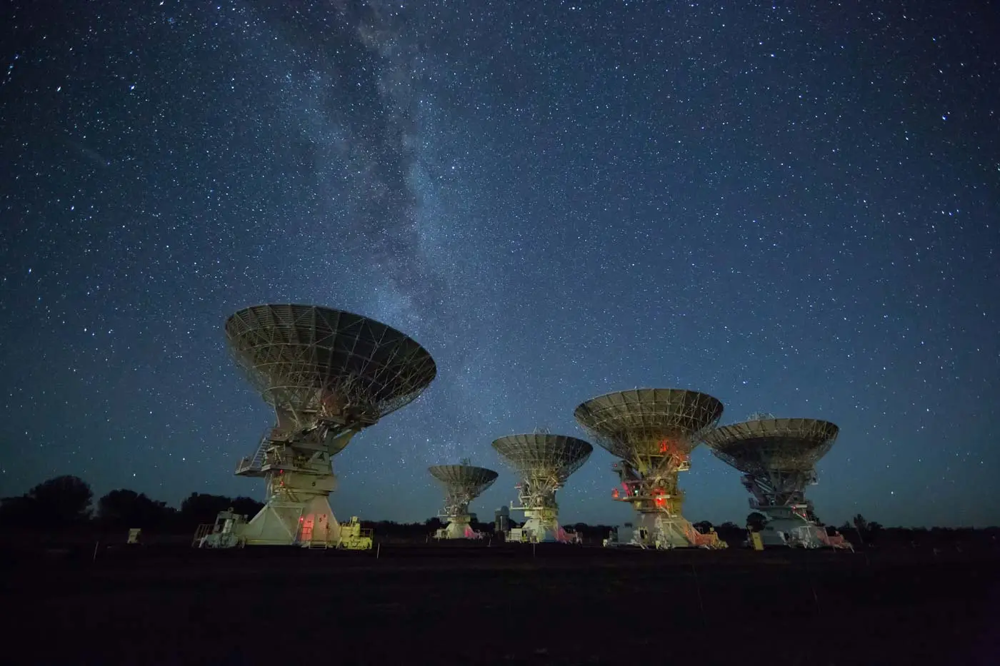
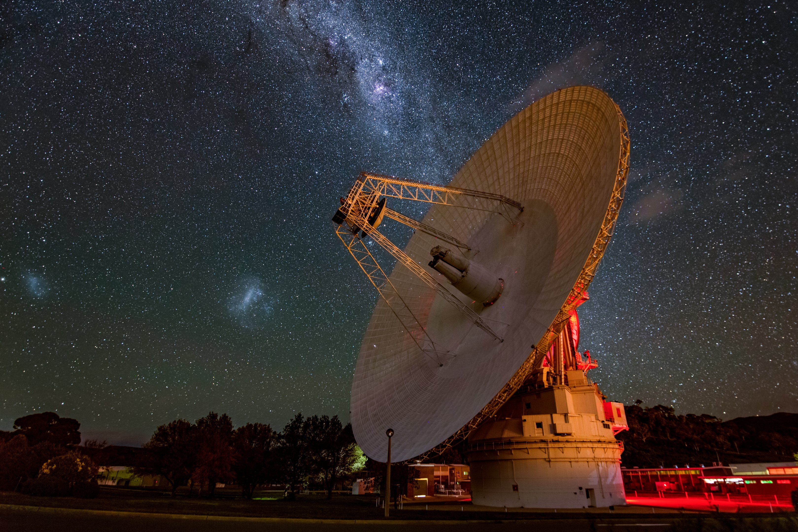
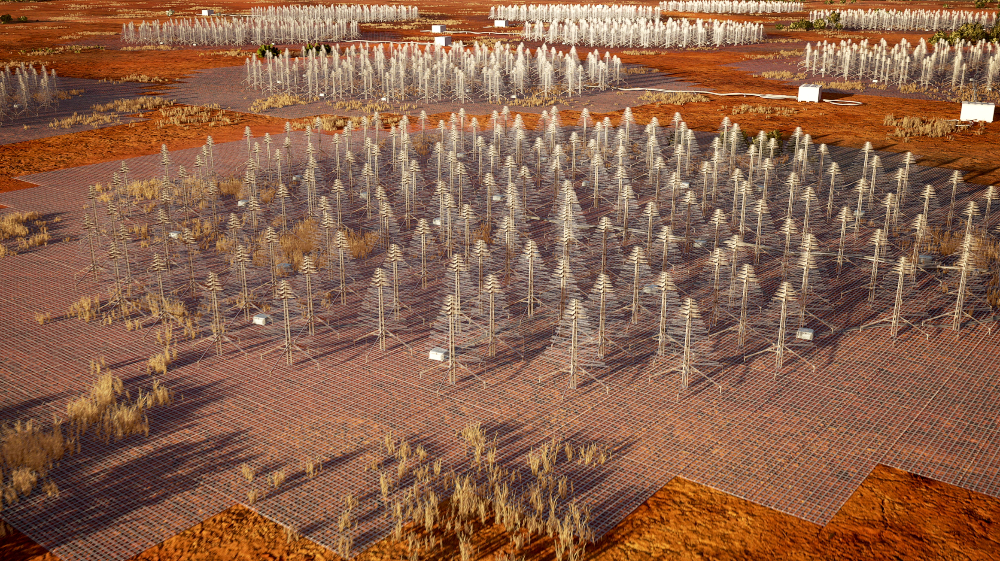
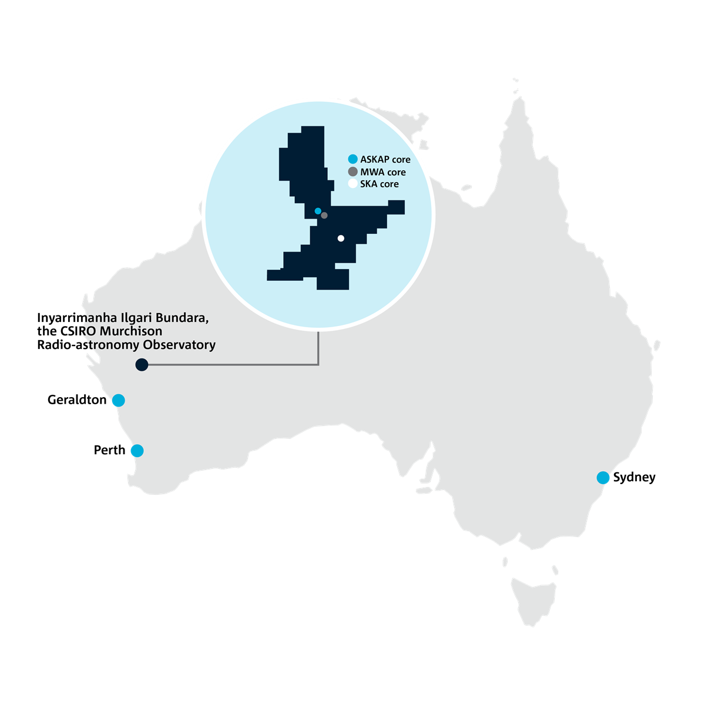
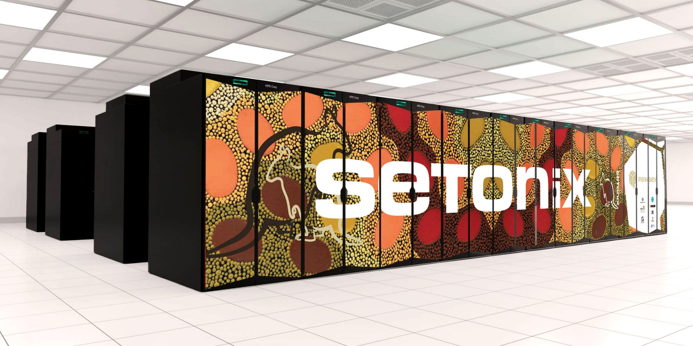
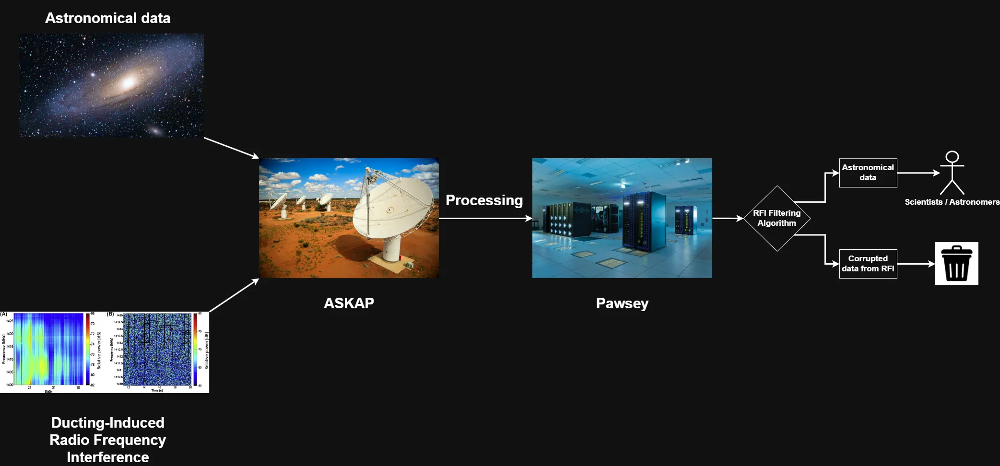

Machine Learning Research Intern
The Bigger Context: CSIRO and Australia's Radio Telescopes
CSIRO operates and supports multiple world-class radio astronomy facilities across Australia. These include ASKAP, Murriyang (the Parkes Radio Telescope), the Australia Telescope Compact Array (ATCA), the Canberra Deep Space Communication Complex (CDSCC), and the upcoming SKA-Low. Together, they enable frontier science while demanding highly reliable, 24/7 operations.





My Focus: ASKAP
My work focused on ASKAP. It is located inside a radio quiet zone to minimize interference from urban radio-frequency sources. In practice, however, atmospheric ducting can still carry distant radio-frequency interference (RFI) over long ranges into the telescope's observing band.


Why This Matters Operationally
ASKAP generates data at an enormous rate (~2.5 GB per second). Raw observations are sent through Pawsey supercomputing infrastructure for preprocessing before astronomers can use them. If strong interference is present, that data can still consume compute and storage resources first, only to be flagged or discarded later during astronomer-side RFI filtering.
This creates a real cost in time, infrastructure load, and observing value. Since these facilities operate continuously, the goal is not to stop observing when ducting risk is high, but to dynamically schedule observations that are more robust to RFI and reserve critical observations for cleaner windows.

What I Built
I developed a predictive ducting-risk workflow for ASKAP that shifts planning from reactive response to proactive scheduling. The system provides a 12-hour rolling forecast with 1-hour resolution, offering guidance early enough to inform day-to-day observing decisions and make better use of telescope and HPC resources.
Practical Outcome
- Better observation planning under ducting risk instead of post-event damage control.
- Lower waste of compute and analyst time on heavily corrupted data streams.
- Higher return on expensive 24/7 observing time through risk-aware allocation.
- Support for mission-critical operations by integrating forecasts into real decision workflows.
Research Manuscript
A manuscript link will be added here once available.